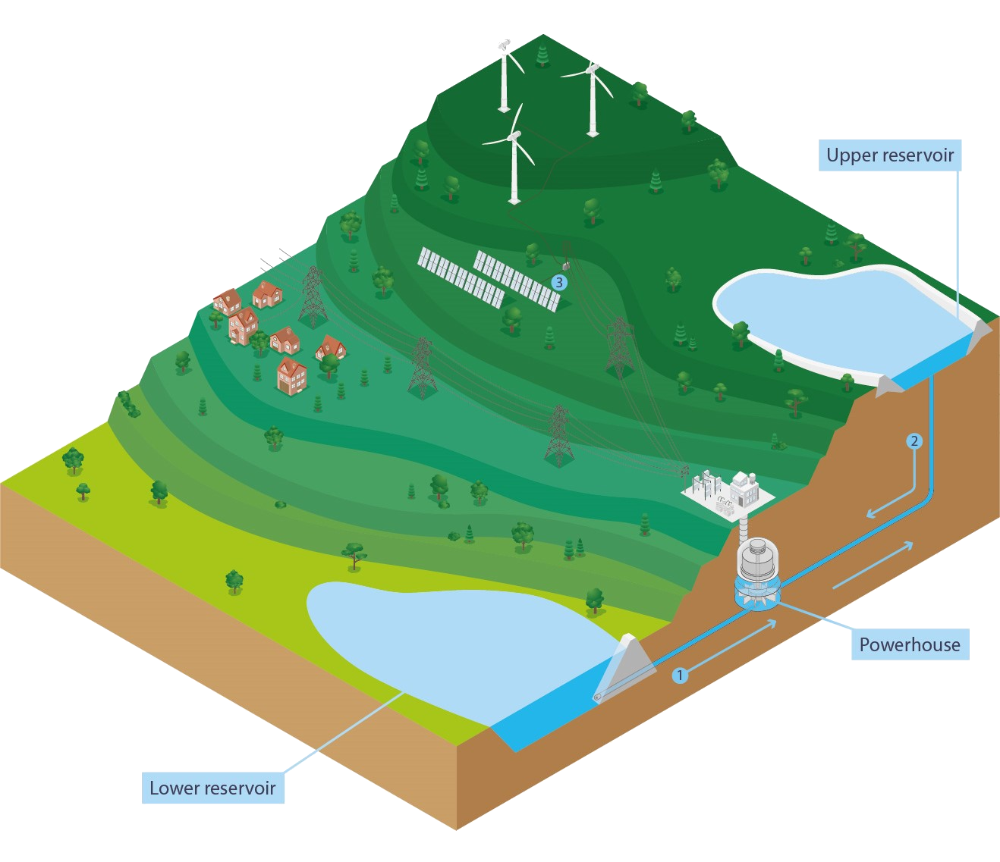

What is Pumped Hydropower Storage?

Pumped Hydropower Storage is a revolutionary new technique of storing energy from renewable sources.
Pumped Hydropower Storage works by pumping water into a higher elavation resevoir in times of high energy production, and letting into the lower resovoir in times of low energy production. The water let into the lower resovoir turns a turbine, generating energy. Essentially, this technology functions as a cheap battery. This provides huge benefits to the energy production industry.
Additionally, the resources required to implement this technology are very cheap. All it needs is a slope, pumps, a source of energy, a turbine, and water. This is opposed to something like Lithium Ions, which make use of rare earth metals.